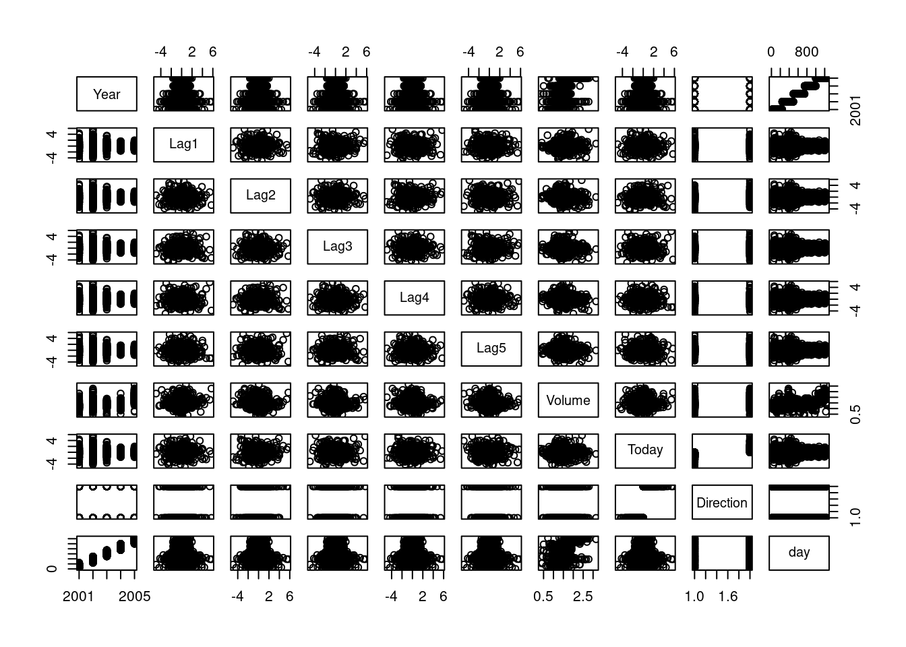
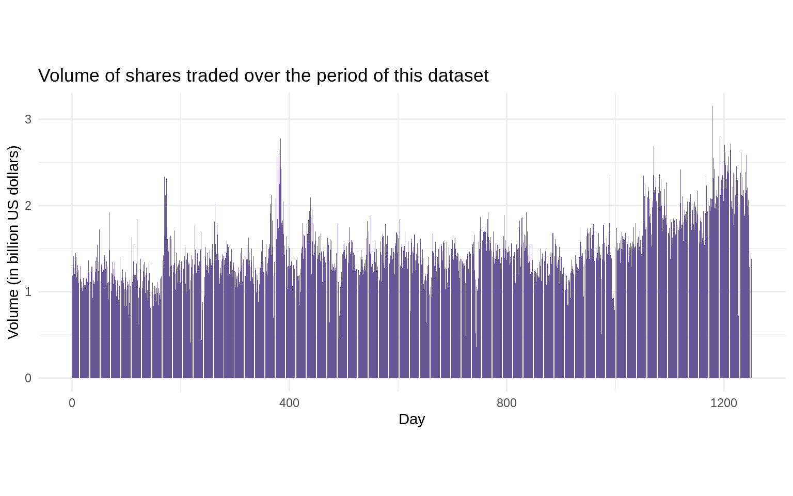

This week, we will build diverse classification models to deal with situation when the response variable is qualitative in R. We predict these qualitative variables through some widely-used classifiers including Logistic Regression (one of many Generalized Linear Models) and Naïve Bayes in this lab session. We will also apply these classification models into practical practices and compare their performance on different data sets.
We will follow the instructions below step by step together while answering whatever questions you might encounter along the way.
Load the ISLR2 package, which contains a large collection of data sets and functions. We will begin by examining some numerical and graphical summaries of the Smarket data, which is part of the ISLR2 library.
library("ISLR2")head(Smarket)
Year Lag1 Lag2 Lag3 Lag4 Lag5 Volume Today Direction
1 2001 0.381 -0.192 -2.624 -1.055 5.010 1.1913 0.959 Up
2 2001 0.959 0.381 -0.192 -2.624 -1.055 1.2965 1.032 Up
3 2001 1.032 0.959 0.381 -0.192 -2.624 1.4112 -0.623 Down
4 2001 -0.623 1.032 0.959 0.381 -0.192 1.2760 0.614 Up
5 2001 0.614 -0.623 1.032 0.959 0.381 1.2057 0.213 Up
6 2001 0.213 0.614 -0.623 1.032 0.959 1.3491 1.392 Up
This data set consists of percentage returns for the S&P 500 stock index over 1250 days, from the beginning of 2001 until the end of 2005. We use the command names() to obtain the variable names of this data set:
How many rows and columns do we have in this dataset?
dim(Smarket)
[1] 1250 9
Let’s add another column day to index the number of days in this dataset:
Smarket$day <-1:nrow(Smarket)head(Smarket)
Year Lag1 Lag2 Lag3 Lag4 Lag5 Volume Today Direction day
1 2001 0.381 -0.192 -2.624 -1.055 5.010 1.1913 0.959 Up 1
2 2001 0.959 0.381 -0.192 -2.624 -1.055 1.2965 1.032 Up 2
3 2001 1.032 0.959 0.381 -0.192 -2.624 1.4112 -0.623 Down 3
4 2001 -0.623 1.032 0.959 0.381 -0.192 1.2760 0.614 Up 4
5 2001 0.614 -0.623 1.032 0.959 0.381 1.2057 0.213 Up 5
6 2001 0.213 0.614 -0.623 1.032 0.959 1.3491 1.392 Up 6
For each date, we have recorded the percentage returns for each of the five previous trading days, Lag1 through Lag5. We have also recorded Volume (the number of shares traded on the previous day, in billions), Today (the percentage return on the date in question) and Direction (whether the market was Up or Down on this date). Our goal is to predict Direction (a qualitative response) using the other features.
Let’s look at a generic summary of this data and how each pair of variables are related:
summary(Smarket)
Year Lag1 Lag2 Lag3
Min. :2001 Min. :-4.922000 Min. :-4.922000 Min. :-4.922000
1st Qu.:2002 1st Qu.:-0.639500 1st Qu.:-0.639500 1st Qu.:-0.640000
Median :2003 Median : 0.039000 Median : 0.039000 Median : 0.038500
Mean :2003 Mean : 0.003834 Mean : 0.003919 Mean : 0.001716
3rd Qu.:2004 3rd Qu.: 0.596750 3rd Qu.: 0.596750 3rd Qu.: 0.596750
Max. :2005 Max. : 5.733000 Max. : 5.733000 Max. : 5.733000
Lag4 Lag5 Volume Today
Min. :-4.922000 Min. :-4.92200 Min. :0.3561 Min. :-4.922000
1st Qu.:-0.640000 1st Qu.:-0.64000 1st Qu.:1.2574 1st Qu.:-0.639500
Median : 0.038500 Median : 0.03850 Median :1.4229 Median : 0.038500
Mean : 0.001636 Mean : 0.00561 Mean :1.4783 Mean : 0.003138
3rd Qu.: 0.596750 3rd Qu.: 0.59700 3rd Qu.:1.6417 3rd Qu.: 0.596750
Max. : 5.733000 Max. : 5.73300 Max. :3.1525 Max. : 5.733000
Direction day
Down:602 Min. : 1.0
Up :648 1st Qu.: 313.2
Median : 625.5
Mean : 625.5
3rd Qu.: 937.8
Max. :1250.0
pairs(Smarket)

Step 1.2 Initial exploratory data analysis
Produce a matrix that contains all of the pairwise correlations among the predictors in a data set:
The function cor() can only take quantitative variables. Because the Direction variable is qualitative, therefore we exclude it when calculating the correlation matrix.
As one would expect, the correlations between the lag variables and today’s returns are close to zero. In other words, there appears to be little correlation between today’s returns and previous days’ returns. The only substantial correlation is between Year and Volume. We could explore how Volume changed chronologically.
library(tidyverse)ggplot(data = Smarket, aes(x = day, y = Volume)) +geom_col(fill="#665797") +ggtitle("Volume of shares traded over the period of this dataset") +xlab("Day") +ylab("Volume (in billion US dollars)") +theme_minimal() +theme(aspect.ratio =2/5)

By plotting the data, which is ordered chronologically, we see that Volume is increasing over time. In other words, the average number of shares traded daily increased from 2001 to 2005.
Step 2: Logistic Regression (25 min)
Step 2: Logistic Regression
We will still use the Smarket data set to fit a Logistic Regression Model to predict Direction.
Step 2.1 Separate some data just for training
Build a training and a testing dataset. In practice we will be interested in our model’s performance not on the data that we used to fit the model, but rather on days in the future for which the market’s movements are unknown. Therefore, we will first create a training data set corresponding to the observations from 2001 through 2004. We will then create a testing data set of observations from 2005.:
Smarket$Year < 2005 returns True for the values satisfying <2005 (smaller than 2005) condition in Year column in Smarket dataset. The same logic can be applied to >, <= , >=, ==(equal) or != (not equal).
To access corresponding rows, we can create a vector (train) and put it in open brackets to make it more readable and reusable, or we can explicitly specify in the open brackets.
Using Smarket[ Smarket$Year==2005,] gives all the rows satisfying this condition with all columns. The same logic can be applied to < , >, <= , >= or != (not equal).
Smarket$Direction [ Smarket$Year==2005 ] tells the direction values corresponding to the rows equal to 2005 in the year column are requested.
Thus, we can construct a training data set named Smarket.before.2005, and a testing data set named Smarket.2005.
How many observations we have in the training set (< 2005)?
nrow(Smarket.before.2005)
[1] 998
What about the test set (2005)?
nrow(Smarket.2005)
[1] 252
Step 2.2 Fit a logistic regression model
Fit a Logistic Regression Model in order to predict Direction using Lag1 through Lag5 and Volume based on training data set:
glm.fits <-glm(Direction ~ Lag1 + Lag2 + Lag3 + Lag4 + Lag5 + Volume, data = Smarket.before.2005, family = binomial)
The generalized linear model syntax of the glm() function is similar to that of lm(), except that we must pass in the argument family = binomial in order to tell R to run a logistic regression rather than some other type of generalized linear model.
We now fit a logistic regression model using only the subset of the observations that correspond to dates before 2005, using the subset argument.
Step 2.3 Inspect the model
Have a look at p-values of this Logistic Regression Model:
summary(glm.fits)
Call:
glm(formula = Direction ~ Lag1 + Lag2 + Lag3 + Lag4 + Lag5 +
Volume, family = binomial, data = Smarket.before.2005)
Deviance Residuals:
Min 1Q Median 3Q Max
-1.302 -1.190 1.079 1.160 1.350
Coefficients:
Estimate Std. Error z value Pr(>|z|)
(Intercept) 0.191213 0.333690 0.573 0.567
Lag1 -0.054178 0.051785 -1.046 0.295
Lag2 -0.045805 0.051797 -0.884 0.377
Lag3 0.007200 0.051644 0.139 0.889
Lag4 0.006441 0.051706 0.125 0.901
Lag5 -0.004223 0.051138 -0.083 0.934
Volume -0.116257 0.239618 -0.485 0.628
(Dispersion parameter for binomial family taken to be 1)
Null deviance: 1383.3 on 997 degrees of freedom
Residual deviance: 1381.1 on 991 degrees of freedom
AIC: 1395.1
Number of Fisher Scoring iterations: 3
Or, alternatively, you can gather the same information using the broom package:
The smallest p-value here is associated with Lag1. The negative coefficient for this predictor suggests that if the market had a positive return yesterday, then it is less likely to go up today. However, at a value of 0.295, the p-value is still relatively large, and so there is no clear evidence of a real association between Lag1 and Direction. So do other predictors.
Step 2.4 Make predictions about the future (2005)
Obtain predicted probabilities of the stock market going up for each of the days in our testing data set, that is, for the days in 2005:
glm.probs <-predict(glm.fits, Smarket.2005, type ="response") glm.probs[1:10]
The predict() function can be used to predict the probability that the market will go up, given values of the predictors. The type = "response" option tells R to output probabilities of the form P(Y = 1|X), as opposed to other information such as the logit. If no data set is supplied to the predict() function, then the probabilities are computed for the training data set that was used to fit the logistic regression model. Here we have printed only the first ten probabilities.
contrasts(Smarket$Direction)
Up
Down 0
Up 1
We know that these values correspond to the probability of the market going up, rather than down, because the contrasts() function indicates that R has created a dummy variable with a 1 for Up.
In order to make a prediction as to whether the market will go up or down on a particular day, we must convert these predicted probabilities into class labels, Up or Down. The following commands create a vector of class predictions based on whether the predicted probability of a market increase is greater than or less than 0.5.
The first command creates a vector of 252 Down elements. The second line transforms to Up all of the elements for which the predicted probability of a market increase exceeds 0.5.
Step 2.5 Create a confusion matrix
Construct confusion matrix in order to determine how many observations in testing data set were correctly or incorrectly classified.
table(glm.pred, Direction.2005)
Direction.2005
glm.pred Down Up
Down 77 97
Up 34 44
Given the predictions, the table() function can be used to produce a confusion matrix in order to determine how many observations were correctly or incorrectly classified.
Step 2.6 What is the error in the test set?
Calculate the test set error rate:
mean(glm.pred == Direction.2005)
[1] 0.4801587
mean(glm.pred != Direction.2005)
[1] 0.5198413
The != notation means not equal to, and so the last command computes the test set error rate. The results are rather disappointing: the test error rate is 52%, which is worse than random guessing! Of course this result is not all that surprising, given that one would not generally expect to be able to use previous days’ returns to predict future market performance.
Step 2.7 Can we find a better combination of features?
Remove the variables that appear not to be helpful in predicting Direction and fit a new Logistic Regression model. We recall that the logistic regression model had very underwhelming p-values associated with all of the predictors, and that the smallest p-value, though not very small, corresponded to Lag1. Perhaps by removing the variables that appear not to be helpful in predicting Direction, we can obtain a more effective model. After all, using predictors that have no relationship with the response tends to cause a deterioration in the test error rate (since such predictors cause an increase in variance without a corresponding decrease in bias), and so removing such predictors may in turn yield an improvement.
glm.fits <-glm(Direction ~ Lag1 + Lag2, data = Smarket.before.2005, family = binomial)summary(glm.fits)
Call:
glm(formula = Direction ~ Lag1 + Lag2, family = binomial, data = Smarket.before.2005)
Deviance Residuals:
Min 1Q Median 3Q Max
-1.345 -1.188 1.074 1.164 1.326
Coefficients:
Estimate Std. Error z value Pr(>|z|)
(Intercept) 0.03222 0.06338 0.508 0.611
Lag1 -0.05562 0.05171 -1.076 0.282
Lag2 -0.04449 0.05166 -0.861 0.389
(Dispersion parameter for binomial family taken to be 1)
Null deviance: 1383.3 on 997 degrees of freedom
Residual deviance: 1381.4 on 995 degrees of freedom
AIC: 1387.4
Number of Fisher Scoring iterations: 3
Direction.2005
glm.pred Down Up
Down 35 35
Up 76 106
mean(glm.pred == Direction.2005)
[1] 0.5595238
Check proportion:
106/ (106+76)
[1] 0.5824176
Above we have refit the logistic regression using just Lag1 and Lag2, which seemed to have the highest predictive power in the original logistic regression model.
Now the results appear to be a little better: 56% of the daily movements have been correctly predicted. It is worth noting that in this case, a much simpler strategy of predicting that the market will increase every day will also be correct 56% of the time! Hence, in terms of overall error rate, the logistic regression method is no better than the naive approach However, the confusion matrix shows that on days when logistic regression predicts an increase in the market, it has a 58% accuracy rate. This suggests a possible trading strategy of buying on days when the model predicts an increasing market, and avoiding trades on days when a decrease is predicted. Of course one would need to investigate more carefully whether this small improvement was real or just due to random chance.
Suppose that we want to predict the returns associated with particular values of Lag1 and Lag2. In particular, we want to predict Direction on a day when Lag1 and Lag2 equal 1.2 and 1.1, respectively, and on a day when they equal 1.5 and −0.8. We do this using the predict() function.
In this lab we used the glm() function with family = binomial to perform logistic regression. Other choices for the family argument can be used to fit other types of GLMs. For instance, family = Gamma fits a gamma regression model. You can alwarys use the following command to explore more about family argument and possible choices.
?glm()
Step 3: Naive Bayes (10 min)
Step 3: Naive Bayes
The Smarket data set will still be utilised to fit a naive Bayes classifier to predict Direction.
Step 3.1 Let’s fit a Naive Bayes model
Fit a naive Bayes model to predict Direction using Lag1 and Lag2:
Naive Bayes Classifier for Discrete Predictors
Call:
naiveBayes.default(x = X, y = Y, laplace = laplace)
A-priori probabilities:
Y
Down Up
0.491984 0.508016
Conditional probabilities:
Lag1
Y [,1] [,2]
Down 0.04279022 1.227446
Up -0.03954635 1.231668
Lag2
Y [,1] [,2]
Down 0.03389409 1.239191
Up -0.03132544 1.220765
Naive Bayes is implemented in R using the naiveBayes() function, which is part of the e1071 library. By default, this implementation of the naive Bayes classifier models each quantitative feature using a Gaussian distribution. However, a kernel density method can also be used to estimate the distributions.
The output contains the estimated mean and standard deviation for each variable in each class. For example, the mean for Lag1 is 0.0428 for Direction=Down, and the standard deviation is 1.23. We can easily verify this:
Direction.2005
nb.class Down Up
Down 28 20
Up 83 121
mean(nb.class == Direction.2005)
[1] 0.5912698
The predict() function is straightforward. From the confusion matrix, Naive Bayes performs very well on this data, with accurate predictions over 59% of the time. This is better than Logistic Regression Model.
The predict() function can also generate estimates of the probability that each observation belongs to a particular class.
nb.preds <-predict(nb.fit, Smarket.2005, type ="raw")nb.preds[1:5, ]
Down Up
[1,] 0.4873164 0.5126836
[2,] 0.4762492 0.5237508
[3,] 0.4653377 0.5346623
[4,] 0.4748652 0.5251348
[5,] 0.4901890 0.5098110
Step 4: Practical exercises (45 min)
Step 4: Practical exercises (in pairs)
So far, we have learnt to fit some kinds of classification models in R. In this practical case, we will continue to use the data set Auto. Make sure that the missing values have been removed from the data.
Six questions are listed below. In this part, you will develop a model to predict whether a given car gets high or low gas mileage based on the Auto data set.
🎯 Questions
Create a binary variable, mpg01, that contains a 1 if mpg contains a value above its median, and a 0 if mpg contains a value below its median. You can compute the median using the median() function. Note you may find it helpful to use the data.frame() function to create a single data set containing both mpg01 and the other Auto variables.
Explore the data graphically in order to investigate the association between mpg01 and the other features. Which of the other features seem most likely to be useful in predicting mpg01? Scatterplots and boxplots may be useful tools to answer this question. Describe your findings.
Split the data into a training set and a test set. Train set contains observations before 1979. Test set contains the rest of the observations.
Perform logistic regression on the training data in order to predict mpg01 using the variables that seemed most associated with mpg01 in question 2. What is the test error of the model obtained?
Perform naive Bayes on the training data in order to predict mpg01 using the variables that seemed most associated with mpg01 in question 2. What is the test error of the model obtained?
Which of these two methods appears to provide the best results on this data? Justify your choice.